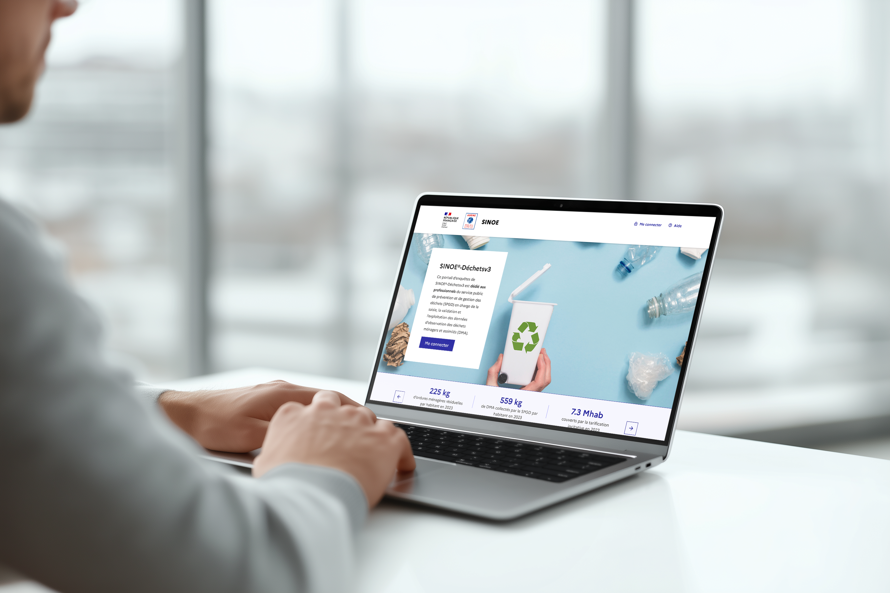

SINOE® Déchets est une plateforme développée par
l’ADEME qui centralise les données liées à la production et à la gestion des déchets en France.
Elle permet aux collectivités et aux acteurs de l’environnement de consulter des indicateurs,
d’analyser les pratiques de collecte et de traitement, et de comparer les performances des territoires.
Dans le cadre de mon alternance chez Scalian, j’ai eu l’opportunité de contribuer à ce projet, en participant à
la refonte de cette plateforme dédiée à la gestion des déchets.

Ma mission principale consistait à concevoir la page d’accueil de l’application.
Celle-ci devait respecter les principes du DSFR (Système de Design de l’État),
qui harmonise les interfaces numériques des services publics français.
En dehors de ces contraintes, je disposais d’une grande liberté créative.
J’ai ainsi proposé quatre pistes graphiques,
explorant différentes approches de mise en page et de hiérarchisation des informations.
À l’issue d’un vote interne et d’échanges avec le client, la proposition présentée ci-dessous a été retenue.